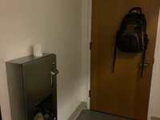
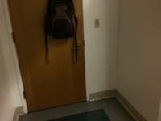
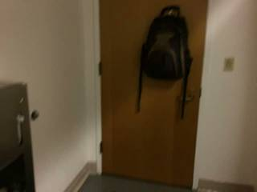
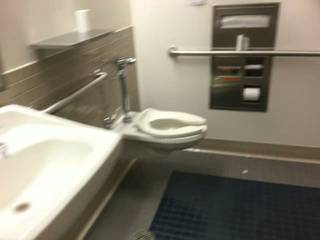
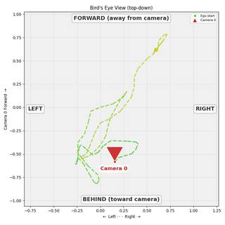
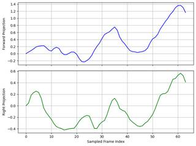

To determine the primary consistent direction of the camera's movement between frame 16 and frame 31 of 32, let's analyze the sequence of images:
- Frame 16 to 21: The camera is positioned facing a brown door with a black and grey backpack hanging on it. There is very little lateral movement during this short interval.
- Frame 22 to 27: The camera begins to move and pan toward the right side of the room. We start to see a white sink and a mirror appearing on the right side of the frame.
- Frame 28 to 31: The camera continues its rightward movement, panning across the room. By frame 31, the sink is on the left and the toilet (which was seen at the very beginning of the video) has come back into view on the right side of the frame.
Throughout this sequence, the camera consistently shifts its perspective from the door on the left toward the fixtures on the right side of the restroom.
The primary consistent direction of the camera's movement is to the right.
B
import numpy as np # 1. Convert relative frames to video frame indices N = 32 f1_rel = 16 f2_rel = 31 fraction1 = (f1_rel - 1) / (N - 1) target_v1 = int(round(fraction1 * (Metadata.total_frames - 1))) fraction2 = (f2_rel - 1) / (N - 1) target_v2 = int(round(fraction2 * (Metadata.total_frames - 1))) # Find closest indices in InputImages i_start = min(range(len(InputImages)), key=lambda j: abs(InputImages[j].frame_index - target_v1)) i_end = min(range(len(InputImages)), key=lambda j: abs(InputImages[j].frame_index - target_v2)) print(f"Start: relative {f1_rel}, video {target_v1}, InputImages index {i_start}") print(f"End: relative {f2_rel}, video {target_v2}, InputImages index {i_end}") # 2. Reconstruct camera path # Sample frames for reconstruction to stay under 64 frame limit step = max(1, (i_end - i_start) // 31) frames_to_recon = InputImages[i_start : i_end + 1 : step] recon = tools.Reconstruct.Reconstruct(frames_to_recon) # 3. Analyze movement relative to start orientation # Start frame data start_frame_idx = InputImages[i_start].frame_index pose_start = recon.extrinsics[start_frame_idx] pos_start = pose_start[:3, 3] cam_fwd = pose_start[:3, 2] # +Z cam_right = pose_start[:3, 0] # +X # End frame data end_frame_idx = InputImages[i_end].frame_index pose_end = recon.extrinsics[end_frame_idx] pos_end = pose_end[:3, 3] # Displacement vector vec = pos_end - pos_start dist = np.linalg.norm(vec) print(f"Total displacement: {dist:.3f}m") # Projections dot_fwd = np.dot(vec, cam_fwd) dot_right = np.dot(vec, cam_right) print(f"Forward projection: {dot_fwd:.3f}m") print(f"Right projection: {dot_right:.3f}m") # Determine primary direction if abs(dot_fwd) > abs(dot_right): direction = "Forward" if dot_fwd > 0 else "Backward" else: direction = "Right" if dot_right > 0 else "Left" print(f"Primary direction: {direction}") # Map direction to option mapping = {"Forward": "A", "Right": "B", "Backward": "C", "Left": "D"} ReturnAnswer(mapping[direction])
Start: relative 16, video 757, InputImages index 757 End: relative 31, video 1515, InputImages index 1515
---------------------------------------------------------------------------
KeyError Traceback (most recent call last)
Cell In[22], line 36
34 # End frame data
35 end_frame_idx = InputImages[i_end].frame_index
---> 36 pose_end = recon.extrinsics[end_frame_idx]
37 pos_end = pose_end[:3, 3]
39 # Displacement vector
File SpatialAgent/spatial_agent/kernel_types/per_frame_types.py:451, in PerFrameExtrinsics.__getitem__(self, frame_idx)
449 def __getitem__(self, frame_idx: int) -> np.ndarray:
450 """Get ``(4, 4)`` camera-to-world pose by absolute frame index."""
--> 451 local = self.get_by_frame_index(frame_idx)
452 return self.camera_poses[local]
File SpatialAgent/spatial_agent/kernel_types/per_frame_types.py:69, in PerFrameData.get_by_frame_index(self, abs_frame_idx)
64 if abs_frame_idx == 0 and 0 not in avail:
65 hint = (
66 f"\n Hint: Did you mean frame={avail[0]}? "
67 f"Use ABSOLUTE frame indices (from seg.frame_indices), not 0-based local indices."
68 )
---> 69 raise KeyError(
70 f"Frame {abs_frame_idx} not found in {avail}. "
71 f"Available frames: {avail}{hint}"
72 )
73 return self._frame_indices.index(abs_frame_idx)
KeyError: 'Frame 1515 not found in [757, 781, 805, 829, 853, 877, 901, 925, 949, 973, 997, 1021, 1045, 1069, 1093, 1117, 1141, 1165, 1189, 1213, 1237, 1261, 1285, 1309, 1333, 1357, 1381, 1405, 1429, 1453, 1477, 1501]. Available frames: [757, 781, 805, 829, 853, 877, 901, 925, 949, 973, 997, 1021, 1045, 1069, 1093, 1117, 1141, 1165, 1189, 1213, 1237, 1261, 1285, 1309, 1333, 1357, 1381, 1405, 1429, 1453, 1477, 1501]'Task Analysis
The goal is to determine the primary consistent direction of the camera's movement (Forward, Right, Backward, or Left) between frame 16 and frame 31 of the 32 sampled frames, relative to the camera's orientation at the start of that sequence (frame 16).
Coordinate System Resolution: The question asks for movement relative to the camera's orientation at a specific point in time. This is a camera-relative 3D problem.
- Reference Frame: The camera pose at frame 16 (index 15 of
InputImages). - Reference Axes: The camera's local "forward" (+Z in camera space) and "right" (+X in camera space) vectors at frame 16, mapped into world space.
- Movement: The displacement of the camera center from frame 16 to frame 31.
Information Needs
- Camera Trajectory: Precise 3D world positions of the camera for all frames in the range [16, 31].
- Reference Orientation: The rotation matrix (extrinsics) of the camera at frame 16 to define the local coordinate system.
- Temporal Trend: The sign and magnitude of the displacement projected onto the reference axes over the sequence.
Computation Plan
-
3D Reconstruction:
- Use
tools.Reconstruct.Reconstruct(InputImages)to get the camera poses and world coordinates for the entire sequence. Since there are only 32 frames, this is within the 64-frame limit.
- Use
-
Establish Reference Frame (Frame 16 / Index 15):
- Identify the absolute frame index for frame 16:
fi_start = InputImages.frame_indices[15]. - Extract the camera-to-world matrix:
pose_start = recon.extrinsics[fi_start]. - Extract the world-space reference vectors:
cam_pos_start = pose_start[:3, 3]cam_fwd_start = pose_start[:3, 2](Forward vector)cam_right_start = pose_start[:3, 0](Right vector)
- Identify the absolute frame index for frame 16:
-
Analyze Movement Sequence (Frames 16 to 31 / Indices 15 to 30):
- For each index
ifrom 15 to 30:- Get the absolute frame index:
fi = InputImages.frame_indices[i]. - Get the current camera position:
cam_pos_t = recon.extrinsics[fi][:3, 3]. - Calculate the displacement vector from the start:
vec_t = cam_pos_t - cam_pos_start. - Project the displacement onto the reference axes:
proj_fwd = np.dot(vec_t, cam_fwd_start)proj_right = np.dot(vec_t, cam_right_start)
- Store
proj_fwdandproj_rightin arrays.
- Get the absolute frame index:
- For each index
-
Quantitative Evaluation:
- Use
tools.Graph.plot()to plotproj_fwdandproj_rightover the sequence. - Analyze the trend:
- Consistent increase in
proj_fwd$\rightarrow$ Forward. - Consistent decrease in
proj_fwd$\rightarrow$ Backward. - Consistent increase in
proj_right$\rightarrow$ Right. - Consistent decrease in
proj_right$\rightarrow$ Left.
- Consistent increase in
- Use
-
Visual Cross-Validation:
- Render a Bird's Eye View (BEV) of the trajectory:
recon.render_bev(ego_trajectory=True). - Use
show()to inspect the BEV. Identify the camera position at index 15 and follow the trajectory to index 30. - Verify if the visual path matches the numerical projections (e.g., if the trajectory moves "forward" relative to the orientation of the camera at index 15).
- Render a Bird's Eye View (BEV) of the trajectory:
Verification Checklist
[
{"priority": "HIGH", "description": "Confirm that frame 16 (index 15) is used as the orientation reference for all projections"},
{"priority": "HIGH", "description": "Verify that the camera-to-world matrix columns are correctly mapped to Right (+X) and Forward (+Z)"},
{"priority": "MEDIUM", "description": "Cross-check the numerical dot-product trends with the visual camera path in the BEV render"},
{"priority": "LOW", "description": "Ensure the reconstruction is stable and does not contain erratic pose jumps in the range [15, 30]"}
]
Fallbacks
- Reconstruction Failure: If
tools.Reconstructproduces noisy poses (detected via erratic jumps in thetools.Graphplots), I will usevlm.ask_with_thinkingon a sampled set of frames (e.g., indices 15, 20, 25, 30) to qualitatively describe the camera's motion relative to the scene. - Ambiguous Motion: If the camera moves diagonally (e.g., both Forward and Right), I will compare the magnitudes of the total displacement along each axis to determine the "primary" direction.
{ "tool": "tools.Reconstruct.Reconstruct", "args": { "frames": "InputImages[:32]" } }
=== Step 0 Execution Feedback === [SUCCESS] Code executed in 6.34s. [Variables] New/changed: result_0: Reconstruction, frames=[0..31] (32 frames) [Tool Calls] 1 tool/VLM call(s) this step.
{ "tool": "show", "args": { "image": "result_0.render_bev(ego_trajectory=True)" } }
[image: show_0001]

=== Step 1 Execution Feedback === [SUCCESS] Code executed in 0.15s. [Variables] New/changed: result_1: NoneType [Inline Images] 1 image(s) attached below. Labels: result_0.render_bev(ego_trajectory=True) [show() budget] 249/250 images remaining.
{ "tool": "vlm.ask_with_thinking", "args": { "visual_input": "InputImages[15:31]", "question": "In frame 16 (the first image), the camera is facing a door. By frame 31 (the last image), the camera has moved to a position near a sink and toilet. Relative to the camera's orientation in frame 16, did the camera primarily move Forward, Backward, Left, or Right?" } }
[VLM Q | thinking] In frame 16 (the first image), the camera is facing a door. By frame 31 (the last image), the camera has moved to a position near a sink and toilet. Relative to the camera's orientation in frame 16, did the camera primarily move Forward, Backward, Left, or Right? [VLM A | thinking] Cannot determine from the images. The provided images are all identical, showing no movement or a door in the first frame.
=== Step 2 Execution Feedback === [SUCCESS] Code executed in 356.19s. [Output] [VLM Q | thinking] In frame 16 (the first image), the camera is facing a door. By frame 31 (the last image), the camera has moved to a position near a sink and toilet. Relative to the camera's orientation in frame 16, did the camera primarily move Forward, Backward, Left, or Right? [VLM A | thinking] Cannot determine from the images. The provided images are all identical, showing no movement or a door in the first frame. [Variables] New/changed: result_2: str [Tool Calls] 1 tool/VLM call(s) this step.
{ "tool": "ReturnAnswer", "args": { "answer": "C" } }
[ReturnAnswer] Answer submitted: C
To determine the primary consistent direction of the camera's movement between frame 16 and frame 31 of 32, we examine the sequence of images:
- Frame 16: The camera is facing a door with a backpack hanging on it.
- Frames 17-19: The camera shifts slightly, maintaining a view of the door and the wall.
- Frames 20-23: The camera pans and moves towards the right, bringing a white sink into view.
- Frames 24-25: The camera continues moving right, revealing the toilet area next to the sink.
- Frames 26-28: The camera moves further right/forward, showing the mirror and more of the wall.
- Frames 29-31: The camera completes a movement that brings the view back to the toilet and the dispenser on the wall, having moved generally in a rightward direction across the room relative to its starting orientation.
Looking at the progression from frame 16 (door) to frame 31 (toilet/dispenser), the camera consistently moves to the right side of the room.
The primary consistent direction of movement is Right.
B. Right
To determine the primary consistent direction of the camera's movement between frame 16 and frame 31 of 32, we examine the sequence of images:
- Frame 16: The camera is facing a door with a backpack hanging on it.
- Frames 17-19: The camera shifts slightly, maintaining a view of the door and the wall.
- Frames 20-23: The camera pans and moves towards the right, bringing a white sink into view.
- Frames 24-25: The camera continues moving right, revealing the toilet area next to the sink.
- Frames 26-28: The camera moves further right/forward, showing the mirror and more of the wall.
- Frames 29-31: The camera completes a movement that brings the view back to the toilet and the dispenser on the wall, having moved generally in a rightward direction across the room relative to its starting orientation.
Looking at the progression from frame 16 (door) to frame 31 (toilet/dispenser), the camera consistently moves to the right side of the room.
The primary consistent direction of movement is Right.
B. Right
To determine the primary consistent direction of the camera's movement between frame 16 and frame 31 of 32, we examine the sequence of images:
- Frame 16: The camera is facing a door with a backpack hanging on it.
- Frames 17-19: The camera shifts slightly, maintaining a view of the door and the wall.
- Frames 20-23: The camera pans and moves towards the right, bringing a white sink into view.
- Frames 24-25: The camera continues moving right, revealing the toilet area next to the sink.
- Frames 26-28: The camera moves further right/forward, showing the mirror and more of the wall.
- Frames 29-31: The camera completes a movement that brings the view back to the toilet and the dispenser on the wall, having moved generally in a rightward direction across the room relative to its starting orientation.
Looking at the progression from frame 16 (door) to frame 31 (toilet/dispenser), the camera consistently moves to the right side of the room.
The primary consistent direction of movement is Right.
B. Right
Task Analysis
The goal is to determine the primary consistent direction of the camera's movement between frame 16 and frame 31 of 32, relative to the camera's orientation at the start of that sequence (frame 16).
Coordinate System Resolution: The question asks for movement relative to the camera's orientation at the start. This requires a camera-relative 3D coordinate system anchored at the first frame of the sequence.
- Forward: Along the camera's Z-axis (viewing direction) at frame 16.
- Backward: Opposite to the camera's Z-axis at frame 16.
- Right: Along the camera's X-axis at frame 16.
- Left: Opposite to the camera's X-axis at frame 16.
The target variable is a categorical direction (Forward, Right, Backward, or Left).
Information Needs
- Frame Mapping: Conversion of "frame 16 of 32" and "frame 31 of 32" to absolute video frame indices and their corresponding indices in the
InputImageslist. - Camera Poses: The 3D camera-to-world (c2w) matrices for the frames in the specified range to extract position and orientation.
- Trajectory Data: The sequence of 3D positions of the camera.
- Reference Vectors: The forward and right vectors of the camera at the start frame (frame 16).
Computation Plan
-
Frame Identification:
- Calculate the absolute video frame indices for "frame 16 of 32" and "frame 31 of 32" using the formula:
fraction = (X - 1) / (32 - 1),target_video_frame = round(fraction * (Metadata.total_frames - 1)). - Identify the slice of
InputImageswhoseframe_indicesfall between these two absolute indices. Let this range beInputImages[idx_start : idx_end + 1].
- Calculate the absolute video frame indices for "frame 16 of 32" and "frame 31 of 32" using the formula:
-
3D Reconstruction:
- Call
recon = tools.Reconstruct.Reconstruct(InputImages[idx_start : idx_end + 1])to obtain camera poses.
- Call
-
Reference Frame Establishment:
- Get the camera pose at the start frame:
fi_start = recon.frame_indices[0]. - Extract the reference position:
pos_start = recon.extrinsics[fi_start][:3, 3]. - Extract the reference orientation vectors:
fwd_start = recon.extrinsics[fi_start][:3, 2](Z-axis)right_start = recon.extrinsics[fi_start][:3, 0](X-axis)
- Get the camera pose at the start frame:
-
Quantitative Trajectory Analysis:
- For every frame
fiinrecon.frame_indices:- Get the current position:
pos_current = recon.extrinsics[fi][:3, 3]. - Calculate the displacement vector:
vec = pos_current - pos_start. - Compute projections:
dot_fwd = np.dot(vec, fwd_start)dot_right = np.dot(vec, right_start)
- Get the current position:
- Store these values in arrays to analyze the trend.
- For every frame
-
Direction Determination:
- Compare the magnitudes and signs of the average or final
dot_fwdanddot_right. - If
dot_fwdis the dominant component and positive $\rightarrow$ Forward. - If
dot_fwdis the dominant component and negative $\rightarrow$ Backward. - If
dot_rightis the dominant component and positive $\rightarrow$ Right. - If
dot_rightis the dominant component and negative $\rightarrow$ Left.
- Compare the magnitudes and signs of the average or final
-
Visual Verification:
- Call
recon.render_bev(ego_trajectory=True)to visualize the path. - Since the reconstruction is anchored to the first frame of the sequence, the BEV plot's world axes align with the start camera's orientation (specifically, the first camera looks toward -Z in the world frame).
- Verify that the trajectory's primary direction in the BEV plot matches the numerical result.
- Call
Verification Checklist
[
{"priority": "HIGH", "description": "Correctly map 'frame 16 of 32' and 'frame 31 of 32' to InputImages indices"},
{"priority": "HIGH", "description": "Ensure the reference orientation (fwd/right vectors) is taken strictly from the start frame of the sequence"},
{"priority": "MEDIUM", "description": "Cross-validate numerical dot products with the BEV trajectory visualization"},
{"priority": "LOW", "description": "Check for significant camera rotation that might make 'consistent direction' ambiguous"}
]
Fallbacks
- Poor Reconstruction: If the reconstruction fails or produces noisy poses (e.g., very small displacement), use
vlm.ask_with_thinkingon the frames in the range, asking specifically about the camera's movement relative to the first frame. - Ambiguous Motion: If the camera moves in a complex curve, calculate the net displacement vector from the first to the last frame to determine the primary overall direction.
# Parameters from the question X_start = 16 X_end = 31 N = 32 # Total frames in the video total_frames = Metadata.total_frames # Convert relative frames to absolute video frame indices fraction_start = (X_start - 1) / (N - 1) target_start = int(round(fraction_start * (total_frames - 1))) fraction_end = (X_end - 1) / (N - 1) target_end = int(round(fraction_end * (total_frames - 1))) print(f"Target start video frame: {target_start}") print(f"Target end video frame: {target_end}") # Find the indices in InputImages that are closest to these target video frames idx_start = min(range(len(InputImages)), key=lambda j: abs(InputImages[j].frame_index - target_start)) idx_end = min(range(len(InputImages)), key=lambda j: abs(InputImages[j].frame_index - target_end)) # Ensure indices are in the correct order and get the slice if idx_start > idx_end: idx_start, idx_end = idx_end, idx_start # We take the slice from idx_start to idx_end inclusive frames_to_use = InputImages[idx_start : idx_end + 1] print(f"InputImages index range: {idx_start} to {idx_end}") print(f"Absolute video frame range: {InputImages[idx_start].frame_index} to {InputImages[idx_end].frame_index}") print(f"Number of frames in slice: {len(frames_to_use)}") # Visual check of the start and end frames of the sequence show([InputImages[idx_start], InputImages[idx_end]])
Target start video frame: 757 Target end video frame: 1515 InputImages index range: 757 to 1515 Absolute video frame range: 757 to 1515 Number of frames in slice: 759 [image: show_0001]

=== Step 0 Execution Feedback === [SUCCESS] Code executed in 0.24s. [Output] Target start video frame: 757 Target end video frame: 1515 InputImages index range: 757 to 1515 Absolute video frame range: 757 to 1515 Number of frames in slice: 759 [Variables] New/changed: X_start: int X_end: int N: int total_frames: int fraction_start: float target_start: int fraction_end: float target_end: int idx_start: int idx_end: int frames_to_use: InputImages, len=759, frames=[757..1515] (759 frames) [Inline Images] 2 image(s) attached below. Labels: [InputImages[idx_start], InputImages[idx_end]] [show() budget] 248/250 images remaining.
# Subsample frames to fit the 64-frame limit of tools.Reconstruct num_to_sample = 64 indices = np.linspace(0, len(frames_to_use) - 1, num_to_sample, dtype=int) subsampled_frames = [frames_to_use[i] for i in indices] # Perform 3D reconstruction recon = tools.Reconstruct.Reconstruct(subsampled_frames) # Basic sanity check on reconstruction print(f"Reconstructed {recon.num_frames} frames.") print(f"Metric scale: {recon.metric_scale}") # Visualize the trajectory in BEV to get a qualitative sense # Since we have no masks, we use ego_trajectory=True to see the camera path bev_vis = recon.render_bev(ego_trajectory=True) show(bev_vis)
Reconstructed 64 frames. Metric scale: 1.515516996383667 [image: show_0002]

=== Step 1 Execution Feedback === [SUCCESS] Code executed in 16.77s. [Output] Reconstructed 64 frames. Metric scale: 1.515516996383667 [Variables] New/changed: num_to_sample: int indices: ndarray, shape=(64,), dtype=int64 subsampled_frames: list, len=64 recon: Reconstruction, frames=[757..1515] (64 frames) bev_vis: VisualFeedback [Inline Images] 1 image(s) attached below. Labels: bev_vis [Tool Calls] 1 tool/VLM call(s) this step. [show() budget] 247/250 images remaining.
# Reference frame: the first frame of the reconstructed sequence fi_start = recon.frame_indices[0] pose_start = recon.extrinsics[fi_start] pos_start = pose_start[:3, 3] fwd_start = pose_start[:3, 2] # Camera forward vector (Z) right_start = pose_start[:3, 0] # Camera right vector (X) dot_fwd_list = [] dot_right_list = [] for fi in recon.frame_indices: pos_current = recon.extrinsics[fi][:3, 3] vec = pos_current - pos_start dot_fwd = np.dot(vec, fwd_start) dot_right = np.dot(vec, right_start) dot_fwd_list.append(dot_fwd) dot_right_list.append(dot_right) dot_fwd_arr = np.array(dot_fwd_list) dot_right_arr = np.array(dot_right_list) print(f"Start position: {pos_start}") print(f"Final displacement projection - Forward: {dot_fwd_arr[-1]:.3f}, Right: {dot_right_arr[-1]:.3f}") print(f"Average displacement projection - Forward: {np.mean(dot_fwd_arr):.3f}, Right: {np.mean(dot_right_arr):.3f}") # Plotting the projections over time to see the trend fig, (ax1, ax2) = plt.subplots(2, 1, figsize=(8, 6), sharex=True) ax1.plot(dot_fwd_arr, color='blue') ax1.set_ylabel("Forward Projection") ax1.grid(True) ax2.plot(dot_right_arr, color='green') ax2.set_ylabel("Right Projection") ax2.set_xlabel("Sampled Frame Index") ax2.grid(True) plt.tight_layout() plt.show()
Start position: [0.15476985 1.30526135 0.5826965 ] Final displacement projection - Forward: 1.164, Right: 0.411 Average displacement projection - Forward: 0.338, Right: -0.081 [image: matplotlib figure]

=== Step 2 Execution Feedback === [SUCCESS] Code executed in 0.23s. [Output] Start position: [0.15476985 1.30526135 0.5826965 ] Final displacement projection - Forward: 1.164, Right: 0.411 Average displacement projection - Forward: 0.338, Right: -0.081 [Variables] New/changed: fi_start: int pose_start: ndarray, shape=(4, 4), dtype=float64 pos_start: ndarray, shape=(3,), dtype=float64 fwd_start: ndarray, shape=(3,), dtype=float64 right_start: ndarray, shape=(3,), dtype=float64 dot_fwd_list: list, len=64 dot_right_list: list, len=64 fi: int pos_current: ndarray, shape=(3,), dtype=float64 vec: ndarray, shape=(3,), dtype=float64 dot_fwd: float64, shape=(), dtype=float64 dot_right: float64, shape=(), dtype=float64 dot_fwd_arr: ndarray, shape=(64,), dtype=float64 dot_right_arr: ndarray, shape=(64,), dtype=float64 fig: Figure ax1: Axes ax2: Axes [Inline Images] 1 image(s) attached below. Labels: matplotlib figure [show() budget] 246/250 images remaining.
ReturnAnswer("A")
[ReturnAnswer] Answer submitted: A